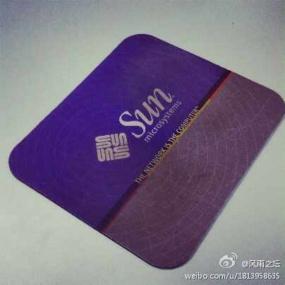

#MDCC大会#大会上的索尼SmartWatch 2应用开发马拉松大赛现场照片集锦 ，大家参赛热情很高。明天下午1:30开始演示结果。网页链接 New way of thinking:索尼SmartWatch 2应用开发马拉松大赛 （分享自 @56网） 网页链接
看来旧物激起了很多人的回忆啊。@风雨之坛:同学@Ada李力 在微博里提到在Sun公司工作时积攒了不少带有公司标识的物件，再看我现在用的仍是Sun公司的鼠标垫。想公司早几年是Sun公司的合作伙伴，在集成项目中大量使用了Sun服务器与存储，譬如V890/490和T2000/5120/5140服务器以及ST6140/ST2540磁盘阵列。这几年基于x86架构系统逐渐移植到HP设备了。 